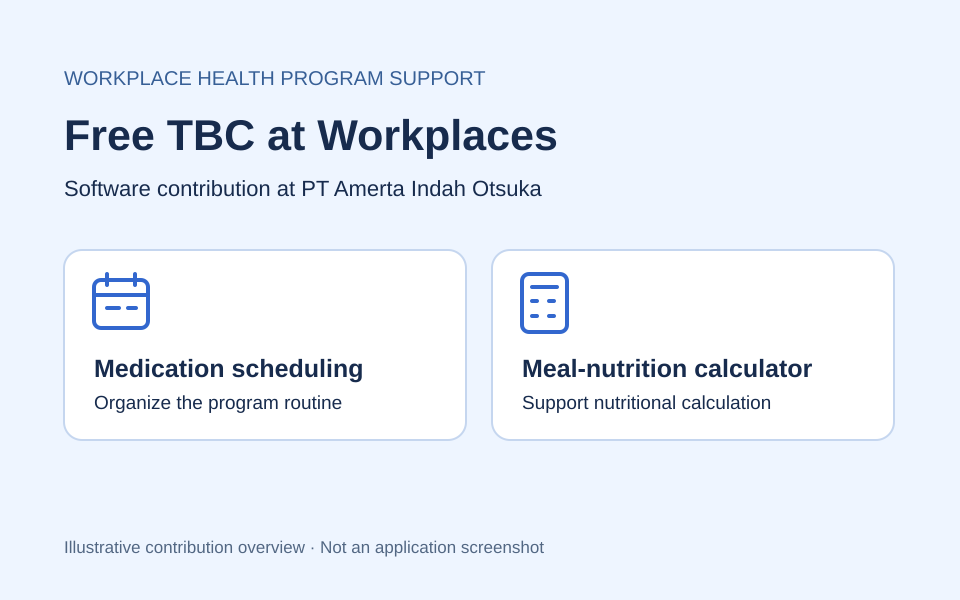

Support the practical routine around workplace TB care
Free TBC at Workplaces was a workplace tuberculosis-support initiative associated with PT Amerta Indah Otsuka. I contributed to the application supporting the program, particularly medication/drug scheduling and the nutrition calculator used for meals.
These contributions focus on making program information usable in daily routines: presenting the medication schedule and supporting meal-related nutritional calculations.
Turn program requirements into practical software tools
A support program needs information that people can work with repeatedly. Medication timing and meal-related calculation are distinct needs, but both benefit from clear inputs and understandable application outputs.
My role was software delivery within that program. The application supports the routine; treatment decisions, dosing, and nutritional guidance belong to the program’s qualified professionals.
My contribution areas
- Medication / drug scheduling
I contributed the application capability for organizing and presenting medication schedules within the program workflow.
- Meal-nutrition calculator
I contributed the calculator supporting meal-related nutritional calculations, translating program requirements into software inputs and outputs.
- Program-support experience
The two capabilities support the wider application by making schedule and calculation information practical to use.
Two contribution areas around the daily routine
The two contribution areas are complementary software capabilities, not a sequence that determines clinical treatment. Care decisions and nutritional guidance remain responsibilities of the program’s qualified professionals.
My contribution at PT Amerta Indah Otsuka
I worked on medication/drug scheduling and the meal-nutrition calculator as part of the wider application delivery. The contribution was to implement those software capabilities, not to define the clinical treatment protocol.
This project required particular care in expressing requirements clearly: the meaning of an input, a scheduled time, or a calculation result should remain understandable to the people using the program.
A functional view of the contribution
The scheduling capability turns program-defined timing information into an application schedule. The calculator turns the required meal-related inputs into a nutritional calculation output. Both are part of the broader program-support application.
Scheduling and meal calculation retain their own inputs and outputs, while serving the same practical goal: making the program?s information usable in the daily routine.
Outcomes & lessons
The project adds healthcare-program support to my enterprise application experience, with a specific contribution to medication scheduling and meal-nutrition calculation.
The central lesson is to preserve the boundary between professional guidance and software implementation. The software makes the defined routine and calculation usable; it does not substitute for clinical judgment.